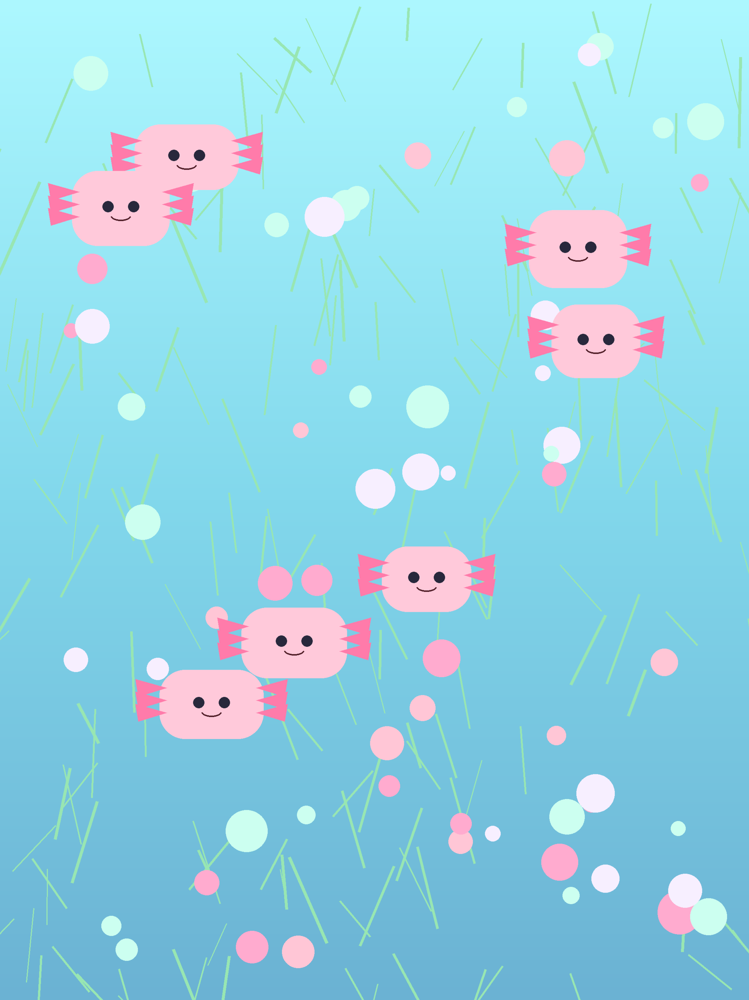
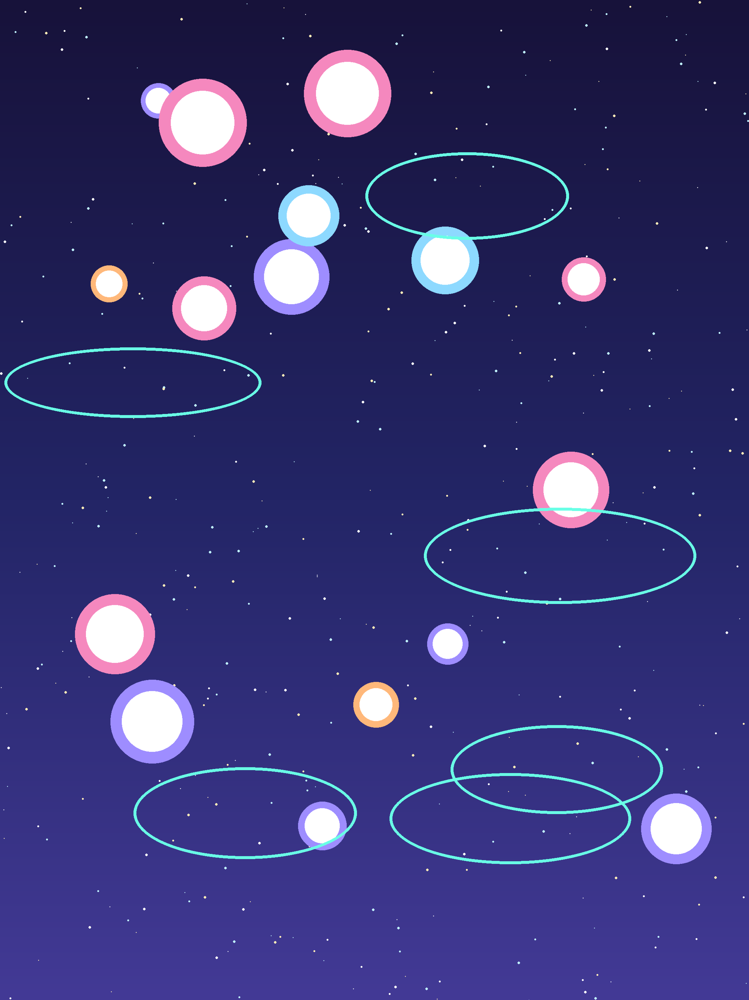
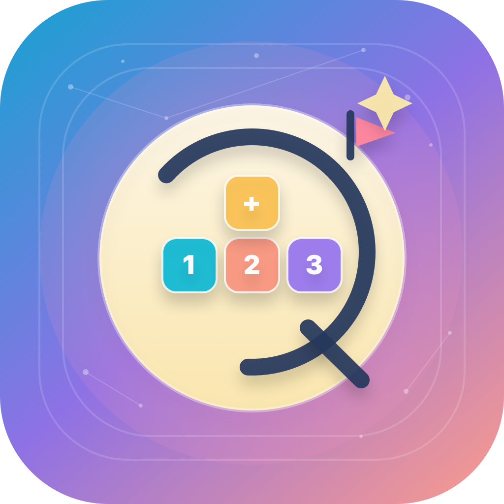

Full K-5 curriculum coverage with enough variety to reduce repetition fatigue while keeping the content bank maintainable.
Native SwiftUI build · offline first · product craft
Sprout Math
Sprout Math shows how I handle tight product boundaries. The goal was a trustworthy, focused iOS math app for kids that works offline and stays calm for parents, not a bloated learning platform.
Best read for product restraint, deterministic UX, and thoughtful platform boundaries.
Quick Read
The value here is not size. It is discipline.
The product works offline because the first version did not pretend to need sync, analytics, or remote services.
Trust matters more than novelty in kids products, so parent controls were part of the core product loop.
The product
A focused learning app, not a noisy "edtech platform."
Sprout Math helps K-5 learners practice math through short, repeatable sessions with adaptive placement, deterministic hints, sticker rewards, and visible progress along a skill trail. The goal was to make it playful without letting it become chaotic.
What I owned
- Product scope, 40-lesson K-5 curriculum, session loop, and content model.
- Offline-first architecture and the decision to keep all progress local.
- Parent controls, privacy boundaries, and deterministic tutoring with correction flow.
- Professional ElevenLabs narration pipeline (2,500+ audio clips) across 4 voice styles.
- 6 themed worlds with sticker rewards, skill trail progression, and parent dashboard.
Why this matters
The judgment here is restraint: knowing what not to connect, what not to automate, and what not to overcomplicate in the first version.
Scope
- Universal iOS app (iPhone and iPad) built in SwiftUI.
- Adaptive placement, spaced review scheduling, and deterministic 3-tier hints.
- Professional narration with 2,500+ ElevenLabs audio clips and 4 voice styles.
- Correction flow showing worked explanations after two incorrect attempts.
- 6 themed worlds with 43 collectible stickers and 12 companion characters.
- Parent-gated settings, progress dashboard, and local diagnostics export.
- Local Core Data persistence for profiles, attempts, mastery, and history.
Visual Direction
The look is playful. The system underneath is controlled.
Candyland
The art helps the app feel warm, but the learning loop stays short and readable.

Axolotl Lagoon
Themes add freshness without forcing the product to reinvent the interaction model every time.
Rainbow Unicorn
Visual variation is useful here because it makes progress feel rewarding without needing extraneous mechanics.

Stars and Space
The interface stays consistent even as the visual world shifts, which keeps the app easy for younger kids to learn.
Superhero City
Bold reds and golds give this theme energy without making the learning loop feel rushed or chaotic.
Turbo Cars
A racing theme that appeals to a different audience without changing the core interaction pattern.

App identity
The product identity is friendly, but still clear enough that a parent can trust it quickly.
Product feel
The calmer choice won over the louder one in almost every design decision: short sessions, one orientation, no ads, no analytics, no surprise states.
Executive Summary
The product is stronger because V1 refuses to be clever in the wrong places.
Kids apps lose trust fast when they lag, break offline, or bury parents under settings and subscriptions. Sprout Math avoids that by keeping the core loop local, the logic deterministic, and the parent controls obvious.
Why it matters
- I can make a smaller product feel complete without stuffing it with extras.
- I know how to build trust into the product, not just into the copy around it.
- I can make technical boundaries serve the experience instead of getting in its way.
Deep Dive
The interesting decisions are mostly about boundaries.
Short sessions over endless play
The loop was designed for 5-10 minute sessions because parents need predictable handoff and kids need a clean stopping point.
Universal iOS, portrait lock
Runs on both iPhone and iPad in portrait to reduce cognitive overhead and keep layout, hit targets, and narration consistent across devices.
Parent trust first
Parent-gated settings, a progress dashboard, explicit privacy copy, and local progress were treated as core product features, not afterthoughts.
Deterministic hints
Hints are generated rules, not model output. That keeps the tutoring behavior explainable and age-appropriate.
Adaptive placement
Placement starts learners at the right band quickly, which keeps early sessions from feeling too easy or too punishing.
Full K-5 curriculum
40 lessons spanning Kindergarten through Grade 5, covering counting, operations, fractions, geometry, measurement, data, and pre-ratio concepts.
Template variety
2,400+ templates across 38 skill units with professional ElevenLabs narration for every question, reducing repetition while keeping the content bank maintainable.
Professional narration
2,500+ pre-generated ElevenLabs audio clips read every question aloud in four voice styles, with a correction flow that shows worked explanations after wrong answers.
Core Data persistence
Profiles, attempts, mastery, review state, and session history stay on device in V1.
No network in the core loop
The absence of sync and cloud services is a product choice. It keeps the loop fast, dependable, and private.
Local export instead of remote analytics
Parents and testers can still get useful diagnostics without adding data collection to the product.
One codebase, universal iOS
A single SwiftUI codebase adapts to iPhone and iPad, using that saved complexity budget on craft and reliability instead of multi-platform sprawl.